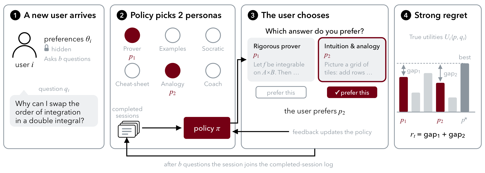

Benchmark and paper · Massachusetts Institute of Technology · 2026
Online LLM Personalization from Pairwise Preferences Across Users
A chatbot can answer the same question in several styles, and users differ in which one they prefer. TutorDuel is a benchmark for learning those preferences online: users arrive one after another with hidden tastes, each asks 24 questions, and the only feedback is which of two displayed answers they chose. The task is to choose the two answers to show, every time, for every user, and to be scored on both. CODuel is a first baseline. It learns from completed sessions to adapt faster to each new user.
Live · one lap of the loop per student
Watch the policy learn across students
Students arrive one after another. For each of a student's 24 questions the policy shows two of the six personas and sees one click. When the session ends it joins the log, the population model refits, and the next student starts from what earlier students had in common. Drawn live on real sessions of the held-out-profile roster, with the judge's stored click probabilities.
The stage replays real sessions with a simplified learner: a diagonal Bayesian logistic learner per student, a clustered population prior fitted on completed sessions' clicks, and CODuel's evidence gate. Its clicks are drawn from the judge's stored probabilities, and the hollow bars are the hidden utilities the regret is scored on. The panel on the right is the paper's measured curve on this roster (64 seeds, centered 25-arrival means with 95% bands), not the stage's own tally. The full method and all numbers are in Results.
Interactive · real benchmark data
Be the policy for one student
One real session from the held-out-profile roster: a simulated student with a hidden profile and 24 questions. Each round, pick two of the six personas. The student's click is drawn from the judge's stored probability for that pair, exactly as in the benchmark, and the hidden utilities are revealed only after the click. Random pairs score 0. Showing the student's two best personas on every question would score 100.
Numbers on this card are computed in the browser from the roster's stored utilities and click probabilities for this arrival. One session is a noisy sample. The leaderboard below sums 350 students and 32 to 64 seeds.
The problem
One click per question, both answers judged
We formalize the interaction as a multi-user contextual dueling bandit. A policy must serve a sequence of short sessions, starting with no preference data, and each user's log is the only thing later users can benefit from.

Each user comes once
A user's preference vector θi is drawn from an unknown population and stays fixed for the session's 24 questions. Then the user leaves. The population's shared structure is what makes transfer possible.
Six personas, known features
The utility of persona p on question q is θi⊤φ(p, q). The features φ come from the persona prompt and the question text alone, so the policy ranks personas before any answer is generated. Only the two selected answers are produced.
One pairwise click
The user's choice follows a Bradley–Terry–Luce model on the two displayed answers' true utilities. The policy learns only from the comparisons it selected, for this user and for all earlier ones.
Strong regret
Both displayed answers are charged their gap to the user's best persona on that question. Even a policy that knows the user pays the gap between the best and the second-best persona, so a distinct-pair floor GT is unavoidable.
RT = Σt rt excess regret = RT − GT
benchmark score = 100 · (RTrand − RT) / (RTrand − GT)
The score is the share of random pairs' excess regret that a policy removes. Random pairs score 0. A policy would score 100 only by reaching the floor on every question, which no policy is expected to do: the floor follows every question-specific preference, including the judge's disagreement between display orders. As a reference for what a learner can reach, a per-user linear oracle, which chooses each user's parameters in hindsight on CODuel's features, scores 81 to 85 on the evaluation rosters.
The benchmark
What is in TutorDuel
A tutoring case study: educational questions, tutor answers in six teaching styles, and pairwise judgments from LLM-simulated students with hidden preference profiles. Policies see persona-question features and sampled clicks. Answer texts, probabilities and utilities stay hidden from them.
24 per session, four topics
Each topic has two chains of three questions: a definition, a computation, and a why-question. Every question ends with one of 13 first-person cues, such as “I need a line I can quote in an exam.”, so the preferred persona can move within a session. Questions by gpt-5.6-sol, answers by gpt-5.6-terra.
Hand-written and template profiles
Sixteen hand-written profiles, eight for development and eight held out. Two further rosters render students from a seven-trait template: Composite uses 350 distinct trait combinations of 3,072, and Quirky draws traits uniformly and adds two of ten quirks, such as disliking numbered lists.
A role-playing LLM judge
gpt-6-luna with reasoning off adopts the student and picks A or B. For every persona pair we cover both display orders and both label assignments with four sampled choices each, 240 picks per question and student, and average the smoothed log-odds. 2,448,000 prompts are stored.
Checked against people and a second judge
Two authors labeled 200 choices on 160 comparisons. The judge agrees with each author (70.0% and 82.5%) as often as the authors agree with each other (72.5%). Judged a second time by TypeSafe Jev, with gpt-6-luna as the rater, the 378,000 comparisons of the three evaluation rosters agree with the first judge in 80.7% of those where neither judge is indifferent, and CODuel ranks first on all three rosters under both judges.
φ(p, q) from text alone
A rater model, TypeSafe Jev, scores how well each persona's answer style suits the question, from the question text and the persona prompts alone. One call rates all six personas, for about $0.03 per 1,000 questions. With g(p, q) the score centered over the personas and scaled to unit standard deviation, φ(p, q) = [ep, g(p, q)] ∈ ℝ7: a user's weights on the indicators ep express a constant preference for each persona, and the weight on g how closely the user follows the rater.
Bradley–Terry references
For each student and question, one score per persona is fitted to the 15 pairwise probabilities by ridge-regularized maximum likelihood and mapped to U ∈ [0, 1] with a common scale of 8 logits. Clicks are drawn from the judge's probabilities, regret is scored on U.
| Roster | Arrivals | Students | Topics | Role | Seeds |
|---|---|---|---|---|---|
| Development | 300 | 8 hand-written profiles | development | every design choice, including CODuel's settings | 32 |
| Held-out topics | 350 | the same 8 profiles | new | new questions, known kinds of students | 64 |
| Held-out profiles | 350 | 8 new hand-written profiles | new | evaluation | 64 |
| Composite | 350 | 350 distinct template students | new | evaluation | 32 |
| Quirky | 350 | 350 template students, two quirks each | new | evaluation | 32 |
Every experiment replays the stored judge probabilities on CPU. No GPU and no API key are needed to run a policy; the API is only used by the data-generation scripts. For a given seed all policies see the same users, questions and uniform draws, so identical pairs receive identical clicks.
Results
Learning over the arrivals
Excess strong regret per user as users arrive, on the three evaluation rosters. Every policy starts from the first arrival with no preference data. A learner that treats each user alone stays flat. CODuel learns each user alone until its gate turns transfer on, after at least eight users, and then improves as its mixture forms.
Leaderboard
Benchmark score, the share of random pairs' excess regret removed (higher is better), with the excess regret RT − GT summed over the run, mean ± s.e. over seeds. Italic rows are references. Every method starts from the first arrival of each roster.
On the held-out profiles, only CODuel's transfer helps
On the held-out profiles, every other method that shares information across users scores below the no-transfer ablation (17 to 23, against 30). The closest method there is CoLSTIM-style, which learns each user alone, and CODuel has 22.8% less excess regret. On Composite and Quirky, the same methods score above the ablation (31 to 38, against 27 and 28), and the closest is COLDB, at 9.3% and 12.5%.
Identifying the student is most of the remaining gap
The best fixed pair per user, chosen in hindsight, scores 76, 66 and 68 on the three evaluation rosters, and the per-user linear oracle, which can also change the pair from one question to the next, scores 85, 81 and 82. Knowing each student's best pair would therefore close most of CODuel's distance to the oracle; adapting to each question accounts for the rest.
The gate holds on negative controls
On a scrambled roster, where each student's choices are relabeled by their own permutation of the personas, and on a simulated population with no shared structure, CODuel stays within one percent of its no-transfer ablation. Without the gate, the same policy raises excess regret by 13% on the simulated population and stays within noise on the scrambled roster.
The learned population does the work
Removing the population model raises excess regret by 29% to 31% on the evaluation rosters, and recalibrating the rater's scores lowers it by 2.3% to 4.1%. On the development roster, the lookahead pair rule is within noise of greedy pairs. New students, rather than new topics alone, cost 6 to 10 points of score.
Baseline method
CODuel: collaborative dueling
CODuel learns from completed sessions which kinds of users recur, and uses that to adapt faster to each new one. It is a Bayesian logistic learner with a prior that is itself learned, a recalibration of the rater's scores from completed sessions, a pair rule that values what a click will reveal, and a check that turns transfer off when it does not help. All of its settings were fixed on the development roster.
Correct the rater's scores with past clicks
A rater can recognize some needs better than others, so its scores need not weigh the six personas as students do. CODuel replaces g(p, q) by the p-th entry of A·g(q), with A = aI + A′ fitted by logistic regression on all choices of the completed sessions. Because A is shared by all users, it carries what completed sessions reveal about the questions, while each user's own vector still describes that user.
A mixture prior from completed sessions
After each session, an EM-style procedure refits a mixture of Gaussians over users' preference vectors. An isotropic component keeps prior mass for users unlike any seen so far, with weight at least α/(α + n) as under a Dirichlet process. Components are born when a session is better explained by the isotropic prior, and removed when weakly supported.
A belief that sharpens with each click
A new user starts from the mixture. After each choice, the learner updates a Laplace posterior inside every component and reweights the components by how well each explains the session so far. The mixture is the learner's belief about who this user is.
Pay now to learn who the user is
Showing the pair with the lowest belief-averaged regret is greedy. When components disagree, a pair whose outcome tells them apart lowers regret for the rest of the session. CODuel scores each pair by its regret now plus the expected regret of greedy play over the remaining rounds, averaged over a bank of recent questions: a knowledge-gradient rule for strong regret.
Transfer only while it predicts better
A no-transfer learner runs alongside and both predict every click before it is revealed. The population learner selects pairs only while its log-likelihood ratio over completed sessions, after at least eight of them, exceeds half a standard error. Otherwise the no-transfer learner selects, and both keep observing.
Main settings: α = 20, at most 16 learned components, gate threshold z = 0.5 after nmin = 8 sessions, a question bank of 16, and a ridge of 10 on A′, first fitted after 20 sessions and refitted every 10. The paper's Appendix gives the full procedure as pseudocode and the sensitivity to each setting.
Run it
Evaluate your own policy
A policy is a Python class with five methods. The runner feeds it the persona-question features of each round and the click, and never the utilities, the profile, or the probabilities. The same class runs on every roster and on the simulator.
class Policy:
name = "policy"
def reset(self, rng, context): # once per run; context has K, d, S, beta, b, N
self.rng, self.K, self.d = rng, context["K"], context["d"]
def start_student(self): # a new user arrives
pass
def select(self, Phi): # Phi: K x d features for this question
raise NotImplementedError # return two distinct persona indices (i, j)
def update(self, outcome): # 1 if the first index won the click, else 0
pass
def end_student(self): # the user leaves; its session joins the log
pass
pip install -r requirements.txt python -m pytest -q persona_bench/tests # 64 seeds on the held-out-profile roster, paired with random pairs python results/bench.py --allow-test --tag mine --seeds 0-63 \ --competitor random --policies "random,none:emax:rt,<your policy spec>" \ --worlds pl_v3.1L_test_unseen_M8_t1_b24_ug_raw_rl1_fjevgw # the paper's statistics: scores, reference rows, paired gains with intervals python results/paper_stats.py --tag mine \ --world pl_v3.1L_test_unseen_M8_t1_b24_ug_raw_rl1_fjevgw
One JSON row per run
Each (world, seed, policy) run caches its cumulative regret, the floor, the excess and per-user and per-round curves. Runs resume after interruption. CODuel takes one to two minutes per run on one core.
Held-out rosters are locked
The test_* rosters need --allow-test, a guard against accidental looks at held-out data during development. Tune on the development roster, then run the three evaluation rosters once.
Submissions open with the release
The code and the dataset are in the paper's supplementary material now and will be released under an open license with the camera-ready version. We will then accept run rows for the three evaluation rosters, with the policy's code and tuning record.
Limitations
What this benchmark does not show
All preferences are simulated. The reference utilities are fitted from the same LLM judge's probabilities that generate the clicks, and the only human judgments are two authors' choices on 160 comparisons. We have not measured human satisfaction or learning outcomes, and the style a student prefers need not be the style that best supports learning. The benefits of transfer vary across held-out profiles, so average gains do not imply improvements for every profile.
CODuel assumes a stationary population and preferences fixed within a session. Linear utilities and Bradley–Terry feedback approximate the judge, and Laplace inference and the lookahead are approximate. We give no regret bound and no guarantee under preference drift or a misspecified population. The gate's repeatedly checked threshold is not anytime-valid. Reported intervals do not account for the adaptive development process. Closing the gap to the per-user oracle and validating with human users are the next steps.
Paper
Read and cite
Abstract
Preprint, 2026. The dataset contains no data about real people: profiles, questions and answers are LLM-generated, and the paper releases them for research on personalization algorithms, not as teaching material.
@article{puech2026tutorduel,
title = {Online {LLM} Personalization from Pairwise Preferences Across Users},
author = {Puech, Romain and Salakhutdinov, Georgy and Bertsimas, Dimitris},
year = {2026},
note = {Preprint}
}